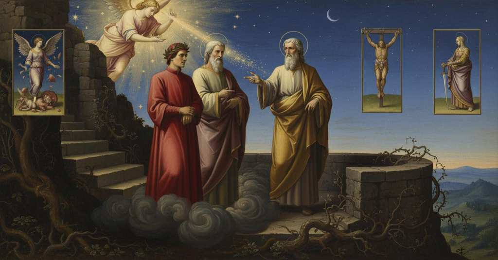

Purgatorio — Canto 17

Riassunto Summary 要約
Dopo aver assistito a visioni di ira punita, Dante sale alla quarta cornice dove, fermato dalla notte, ascolta Virgilio spiegare la teoria dell'amore come seme di ogni virtù e peccato e la conseguente struttura del Purgatorio.
After witnessing visions of punished wrath, Dante ascends to the fourth terrace where, halted by night, he listens to Virgil explain the theory of love as the seed of every virtue and sin and the resulting structure of Purgatory.
罰せられた憤怒の幻視を目撃した後、ダンテは第四の煉獄棚に登り、そこで夜のために足止めされ、あらゆる徳と罪の種子としての愛の理論と、それに基づく煉獄の構造に関するウェルギリウスの説明を聞く。
Segmento 1 1–39
Uscito dal fumo denso della terza cornice, Dante paragona il suo primo rivedere il sole al vederlo debolmente attraverso la nebbia che si dirada. Subito dopo, la sua immaginazione, mossa non dai sensi ma da una luce celeste, gli presenta tre visioni esemplari dell'ira punita. La prima è quella dell'empietà di Progne, trasformata in uccello; la seconda è quella del biblico Aman, crocifisso con aria fiera e dispettosa; la terza è quella della regina Amata che, rimproverata in visione dalla figlia Lavinia, si è uccisa per rabbia.
Having emerged from the dense smoke of the third terrace, Dante compares his first sight of the sun again to seeing it weakly through thinning fog. Immediately afterwards, his imagination, moved not by the senses but by a celestial light, presents him with three exemplary visions of punished wrath. The first is that of the impiety of Progne, transformed into a bird; the second is that of the biblical Haman, crucified with a fierce and scornful air; the third is that of Queen Amata who, reproached in the vision by her daughter Lavinia, killed herself out of anger.
第三の煉獄棚の濃い煙から出たダンテは、再び太陽を目にした最初の様子を、晴れゆく霧を通して弱々しく太陽を見ることにたとえる。その直後、感覚ではなく天からの光によって動かされた彼の想像力は、罰せられた憤怒の三つの模範的な幻視を彼に見せる。一つ目は鳥に変えられたプロクネの邪悪さ、二つ目は誇り高く軽蔑的な様子で磔にされた聖書のアマン、三つ目は幻視の中で娘ラウィニアに責められ、怒りのあまり自害したアマタ王妃である。
Segmento 2 40–75
Le visioni di Dante vengono interrotte da una luce abbagliante. Una voce, che appartiene a un angelo nascosto nel suo stesso splendore, li invita a salire alla cornice successiva. Virgilio spiega che questo spirito divino li guida senza bisogno di preghiere e li esorta a procedere prima che faccia buio, poiché non si può salire di notte. Appena Dante mette piede sul primo gradino della scala, sente un battito d'ala che gli cancella dalla fronte la 'P' dell'ira e ode la beatitudine dei pacifici. Al calar della sera, con l'apparire delle stelle, Dante si accorge che le forze gli vengono meno, impedendogli di continuare l'ascesa.
Dante's visions are interrupted by a dazzling light. A voice, belonging to an angel hidden in its own splendor, invites them to ascend to the next terrace. Virgil explains that this divine spirit guides them without needing to be asked and urges them to proceed before it gets dark, as one cannot climb at night. As soon as Dante sets foot on the first step of the staircase, he feels the beat of a wing that erases the 'P' for wrath from his forehead and he hears the beatitude of the peacemakers. As evening falls and the stars appear, Dante realizes his strength is failing him, preventing him from continuing the ascent.
ダンテの幻視は、まばゆい光によって中断される。自らの輝きの中に隠れた天使のものである声が、次の煉獄棚へと登るよう彼らを招く。ウェルギリウスは、この神聖な霊は祈りを必要とせずに導いてくれると説明し、夜は登ることができないため、暗くなる前に進むよう促す。ダンテが階段の最初の段に足を乗せるとすぐに、翼の羽ばたきが彼の額から憤怒の「P」の字を消し去り、平和をもたらす人々のための祝福の言葉が聞こえるのを感じる。夕暮れが訪れ星が現れると、ダンテは力が尽きていき、登り続けることができなくなることに気づく。
Segmento 3 76–105
Fermatisi sulla quarta cornice, Dante chiede a Virgilio quale peccato vi si purghi. Virgilio risponde che si tratta dell'accidia, ovvero "l'amor del bene, scemo del suo dover", e inizia un discorso fondamentale sulla natura dell'amore. Egli spiega che l'amore, naturale o d'animo (razionale), è presente in ogni creatura. Mentre l'amore naturale è sempre senza errore, quello d'animo può peccare se si rivolge a un oggetto malvagio, o se persegue il bene con troppo o troppo poco vigore. Virgilio conclude che l'amore è quindi il "seme" sia di ogni virtù che di ogni azione meritevole di pena.
Having stopped on the fourth terrace, Dante asks Virgil what sin is purged there. Virgil replies that it is sloth, that is, "the love of the good, deficient in its duty," and begins a fundamental discourse on the nature of love. He explains that love, natural or of the mind (rational), is present in every creature. While natural love is always without error, that of the mind can sin if it turns to a wicked object, or if it pursues the good with too much or too little vigor. Virgil concludes that love is therefore the "seed" of both every virtue and every action deserving of punishment.
第四の環で立ち止まったダンテは、そこでどのような罪が浄められるのかをウェルギリウスに尋ねる。ウェルギリウスは、それは怠惰、すなわち「務めを怠った善への愛」であると答え、愛の本質についての根本的な説示を始める。彼は、愛には「自然的」なものと「理性的」なものがあり、あらゆる被造物に存在すると説明する。自然的な愛は常に誤りがないのに対し、理性的な愛は、邪悪な対象に向かったり、善を追求する際に過剰または過少な熱意を持ったりすることで罪を犯しうる。ウェルギリウスは、したがって愛はあらゆる徳と、罰に値するあらゆる行いの両方の「種子」であると結論づける。
Segmento 4 106–139
Virgilio prosegue spiegando che, siccome l'amore non può odiare né se stesso né Dio, l'amore peccaminoso si rivolge necessariamente al prossimo. Questo amore pervertito, che desidera il male altrui, si manifesta in tre forme punite nelle cornici inferiori: l'orgoglio, l'invidia e l'ira. Introduce poi l'amore difettoso (l'accidia, punita su questa cornice), che persegue il sommo bene con lentezza. Infine, accenna all'amore eccessivo per i beni terreni, punito nelle tre cornici superiori, ma volutamente non ne spiega la tripartizione per lasciare che sia il narratore a scoprirla.
Virgil continues by explaining that since love cannot hate itself or God, sinful love is necessarily directed at one's neighbor. This perverted love, which desires another's harm, manifests in three forms punished on the lower terraces: pride, envy, and wrath. He then introduces deficient love (sloth, punished on this terrace), which pursues the highest good with slowness. Finally, he mentions the excessive love for earthly goods, punished on the three upper terraces, but he deliberately does not explain its tripartite division, leaving the narrator to discover it.
ウェルギリウスは説明を続け、愛は自己自身も神も憎むことはできないため、罪深い愛は必然的に隣人に向けられると論じる。他者の害を望むこの歪んだ愛は、下の環で浄められる三つの形、すなわち傲慢、嫉妬、憤怒として現れる。次に彼は、至高の善を緩慢に追求する不十分な愛（この環で浄められる怠惰）について述べる。最後に、上の三つの環で浄められる地上の善への過剰な愛に言及するが、その三つの区分については語り手自身に発見させるため、意図的に説明しない。